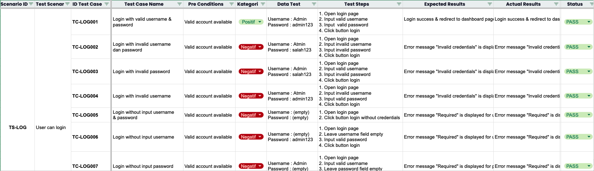
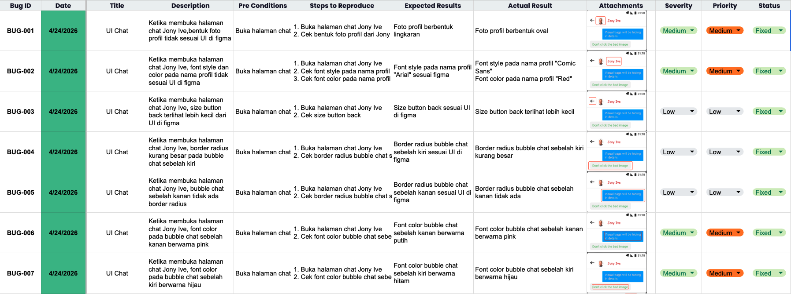
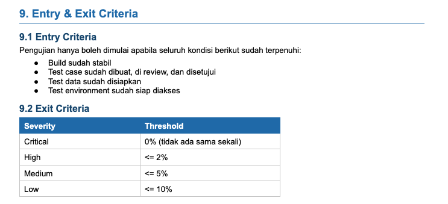

Quality Assurance · Manual Testing
I make sure software actually works the way it should. Meticulous, detail-obsessed, and genuinely passionate about quality — I find the bugs before your users do.
I am currently transitioning my career from graphic design to quality assurance. Experienced in validating visual consistency and ensuring the delivery of high-quality digital content. Possesses strong attention to detail and collaboration skills. Currently developing skills in manual testing, test case design, and API testing.
I have experience in ensuring the delivery of high-quality digital content through careful review and validation processes. I am also comfortable working collaboratively within a team environment.
My design experience has strengthened my problem-solving skills and ability to identify inconsistencies efficiently. These skills support my transition into the QA field.
Currently, I am developing my knowledge in manual testing, test case design, and API testing to build a strong foundation in quality assurance.
Focused on manual testing fundamentals
Real manual testing projects with full documentation — test plans, test cases, and bug reports included.
Performed manual testing on the OrangeHRM web application by verifying the login functionality using both valid and invalid credentials, ensuring the Forgot Password feature displayed a success message and redirected users back to the login page, and testing the Directory feature including employee search, filter reset, and “No Results Found” scenarios, with practicing bug reporting.
End-to-end manual testing of a checkout flow — from cart to order confirmation. Tested payment form validation, promo codes, address auto-fill, order summary accuracy, and error messages.
Manual API testing using Postman on a public REST API — tested CRUD operations, HTTP status codes, response schema validation, and edge cases like empty payloads and unauthorized access.
Clean and structured



I'm actively looking for entry-level QA opportunities. Whether it's a full-time role, internship, or freelance project — I'd love to hear from you.